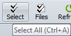

Experteneinstellungen Optionen
Extras > Optionen > Experteneinstellungen


|
Experteneinstellungen Optionen Extras > Optionen > Experteneinstellungen |
|
|
Bei den Experteneinstellungen (Tweaks) handelt es sich um fortgeschrittene oder weniger gängige Programmoptionen, die wir hier zusammenfassen, um andere Bereiche nicht zu überladen. Auf Updates überprüfen Standardmäßig überprüft Beyond Compare unsere Internetseiten auf eine neu zur Verfügung stehende Programmversion. Sie können die Anzahl der Tage zwischen den Überprüfungen ändern, oder entfernen Sie die Markierung aus dem Kontrollkästchen Prüfen alle, um niemals zu prüfen. Editoranzeige Der Großteil der Anzeigeeinstellungen für Textansichten ist auf der Seite Farben, Schriftarten im Optionendialog zu finden. Einstellungen speziell für Texteditoren befinden sich hier. Normalerweise wird die Syntaxfärbung auf unterschiedlichen Zeilen unterdrückt, so dass sie das Farbschema für Unterschiedskennzeichung nicht stört. Markieren Sie das Kontrollkästchen Syntaxfärbung in ungleichen Zeilen zeigen um dieses Verhalten zu ändern. Schraffierung für Zeilen hinter dem Dateiende verwenden hilft das Dateiende Ihrer Textdateien zu erkennen, insbesondere beim Vergleich einer längeren mit einer kürzeren Datei. Bearbeitungsleiste des linken Editors rechts positionieren (nur Vergleich) positioniert die Kopierschaltflächen dichter zusammen in die Mitte der Ansicht und behält die Bildlaufleisten an den äußeren Rändern. Es hat keine Auswirkungen, wenn Sie Ansicht > Untereinander Schriftartenkopplung in Editoren aktivieren ermöglicht dem Texteditor, zusätzliche Schriftarten zu verwenden, um Zeichen aus mehreren Sprachen zu unterstützen. Single-Farbe verwenden veranlasst Dateiansichten separat konfigurierbare Farben für jene Objekte zu verwenden, die nur auf einer Seite des Vergleiches vorhanden sind. Sie können einzelne Pixel im Feld Zusätzlicher Zeilenzwischenraum addieren oder subtrahieren, um die Textzeilennähe in der Ansicht zu ändern. Um eine senkrechte Linie an einer bestimmten Position anzuzeigen, setzen Sie das Feld Senkrechte Linie zeigen an Stelle auf den gewünschten Wert. Setzen Sie den Wert auf Null (0), um die Linie zu verbergen. Wenn Sie eine Proportionalschriftart verwenden, richtet sich die Position der Linie nach der Breite des Leerschritts (Space). Inaktiven Bereich dimmen um dunkelt die nicht-aktive Seite des Vergleichs ab, um den Fokus leichter auf die aktive Seite zu lenken.
Dateioperationen Akustisches Signal nach langen Dateioperationen verursacht einen vernehmbaren Klang, sobald Dateioperationen wie Kopieren und Verschieben beendet wurden, es sei denn, sie benötigen weniger als 3 Sekunden.
Markieren Sie das Kontrollkästchen Auf außen geänderte Dateien überprüfen, um beim Zurückkehren in eine Dateiansicht auf eine neuere Dateiversion zu prüfen. Falls gefunden, wird Sie Beyond Compare fragen "Datei auf Disk verändert. Erneut laden?" Markieren Sie das Kontrollkästchen Automatisch erneut laden, sofern Änderungen nicht verworfen werden, damit Beyond Compare die neuere Datei automatisch nachlädt, sofern Sie keine Änderungen in der angezeigten Datei vorgenommen haben. Vergleichspriorität kann geändert werden, um auf die Reihenfolge der auszuführenden Hintergrundaktivität Einfluss zu nehmen. Puffergröße für Binärvergleiche kann zur Einflussnahme auf die Geschwindigkeit verändert werden. Startansicht Letzte Sitzungsauswahl beibehalten kann gesetzt werden, um die letzte von der Startansicht aus gewählte Sitzung zu nehmen, statt der durch die Anwendung zuletzt geänderten. Benutzungsoberfläche Hier ist dargestellt, wie eine Symbolleiste aussieht, wenn die Kontrollkästchen für Quickinfos für Symbolleisten usw. anzeigen und Tastaturkürzel in den Quickinfos anzeigen markiert sind:  Esc-Taste schließt Dateiansichten betrifft alle Dateiansichtsarten, wie Textvergleich, Tabellenvergleich und Bildvergleich. Sie hat keinen Einfluss auf Ordneransichten. Einzelne vertikale Bildlaufleiste kann markiert werden, um durch Ausblenden einer redundanten vertikalen Bildlaufleiste Platz zu sparen. Position des Dateibetrachter-Trenners beibehalten kann markiert werden, um die Größe der Bereiche der Dateinansichten benutzerdefiniert zu lassen, statt sie durch die Anwendung automatisch zu bestimmen. Wählen Sie Passend stauchen, um die Miniaturansicht auf den verfügbaren vertikalen Platz zu komprimieren. Wählen Sie Bildlauf erlauben, um stattdessen eine vertikale Bildlaufleiste einzublenden. Log-Meldungen Tätigkeitszusammenfassungen Gibt eine Zusammenfassung jeder Operation aus. Tätigkeitsdetails Gibt Details jeder Operation aus, inkl. jeder betroffenen Datei. Warnungen Gibt Warnungen und Fehler aus. FTP-Details Gibt Meldungen an und von FTP-Standorten aus. Debug-Meldungen Log-Meldungen, die für das technische Unterstützungsteam von Scooter Software nützlich sind. Anzeigen bis zu definiert wieviele Meldungen vom Log verarbeitet werden, bevor begonnen wird, die ältesten zu löschen. Wenn eine Datei für Mitteilungen automatisch in Datei speichern eingegeben wurde, so wird sie wenn nötig erstellt. Metrik Maximale autom. gespeicherte Sitzungen Definiert wie viele Sitzungen automatisch gespeichert werden, bevor die älteste automatisch gelöscht wird. Geben Sie eine Null (0) ein, um das automatische Speichern von Sitzungen abzuschalten. Max. kürzlich verwendete Objekte Definiert wie viele Objekte automatisch gemerkt werden, bevor das älteste automatisch gelöscht wird. Zum Beispiel wirkt es sich auf Klappmenüs der Basisordner aus. Millisekunden bevor Hilfehinweis erscheint Definiert wie lang die Wartezeit ist, bevor ein Popup-Hinweis erscheint. Millisekunden bevor Hilfehinweis verschwindet Definiert wie lange ein Popup-Hinweis sichtbar bleibt. Millisekunden bevor sich die inkrementelle Suche in Gang setzt Definiert für die inkrementelle Suche, wie lang auf die Eingabe des nächsten Zeichens durch den Anwender gewartet wird. Namenfilter-Voreinstellungen Bestimmen Sie die voreingestellten Filtermöglichkeiten, die auf der Symbolleiste der Ordneransicht verfügbar sind. Verwenden Sie einfache semikolonseparierte Wildcard- bzw. Jokerzeichen-Definitionen für die Maske. Beispiel: *.htm;*.html;*.jpg
Skripte Markieren Sie das Kontrollkästchen Akustisches Signal am Ende, um einen hörbaren Hinweis zu erhalten, sobald ein Skript beendet ist.
Markieren Sie das Kontrollkästchen Schließen wenn fertig, um das Programm zu verlassen, sobald ein Skript beendet ist. Spezifizieren Sie einen Gemeinsamen Skriptenordner als Ablageort für gemeinsam genutzte Skripte. Sollte ein Skript-Dateiname nicht im aktuellen Ordner gefunden werden, wird Beyond Compare hier danach suchen. Gemeinsame Sitzungen-Datei Wenn eine Gemeinsam genutzte Sitzungsdatei spezifiziert wurde, werden gemeinsam genutzte Sitzungen in der Sitzungsbaumstruktur erscheinen. Sie können diese verwenden, jedoch nicht modifizieren. Verwenden Sie Extras > Einstellungen exportieren, um eine gemeinsam genutzte Sitzungsdatei zu erstellen. |